Visi Kami
Menjadi produsen jamur tiram terpercaya di Indonesia dengan ekosistem budidaya yang berkelanjutan dan bernilai tambah bagi petani dan konsumen.
Misi Kami
- check_circle Memproduksi jamur tiram berkualitas konsisten dengan SOP yang terukur.
- check_circle Membangun kemitraan yang transparan dan saling menguntungkan.
- check_circle Mendorong adopsi teknologi untuk efisiensi operasional dan kualitas produk.
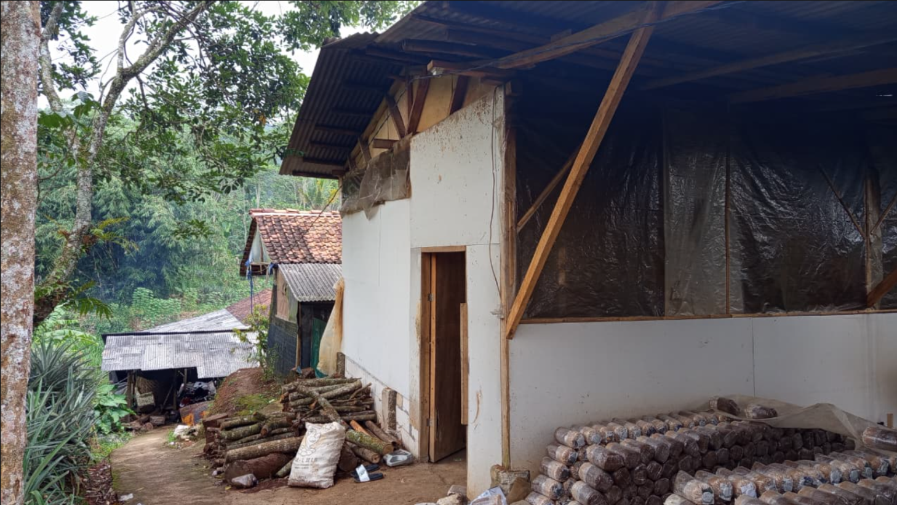
Nilai-Nilai Perusahaan
Prinsip yang kami pegang sejak 2019 dan terus kami jaga saat bertumbuh.
Sustainability
Praktik budidaya berkelanjutan & ramah lingkungan.
Transparency
Pelaporan operasional yang jelas dan jujur.
Excellence
Standar mutu produk & layanan yang konsisten.
Innovation
Pemanfaatan teknologi untuk efisiensi & kualitas.
Perjalanan Kami
Dari rintisan 2019 hingga penguatan operasi & kemitraan hari ini.
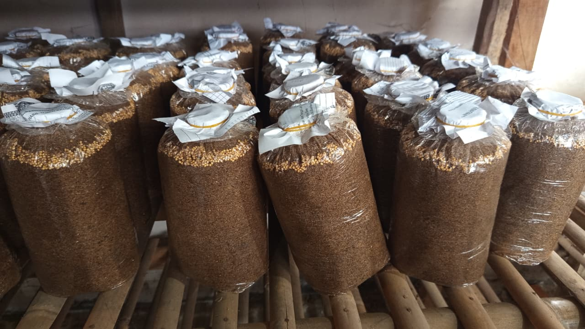
Rintisan Usaha
Mulai merintis budidaya jamur tiram skala rumahan dengan batch uji coba 120 baglog.

Validasi Operasional
Menyempurnakan SOP produksi & quality control, mulai memasok ke pelanggan sekitar.
Fasilitas Produksi
Membangun kumbung jamur pertama berkapasitas >10.000 baglog sampai dengan sekarang dan memperluas distribusi.

Kemitraan Lokal
Standardisasi mutu internal dan memulai kemitraan petani lokal untuk skala produksi.

Digitalisasi Proses
Pencatatan produksi dan stok terdigitalisasi untuk transparansi operasional penuh.
Galeri Operasional
Snapshot proses & fasilitas kami seiring perjalanan sejak 2019.
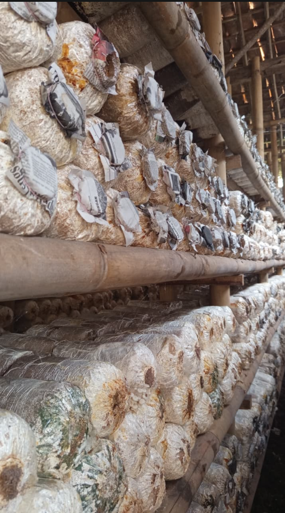
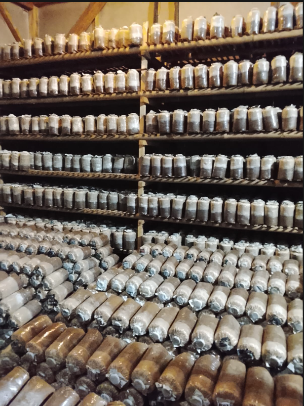
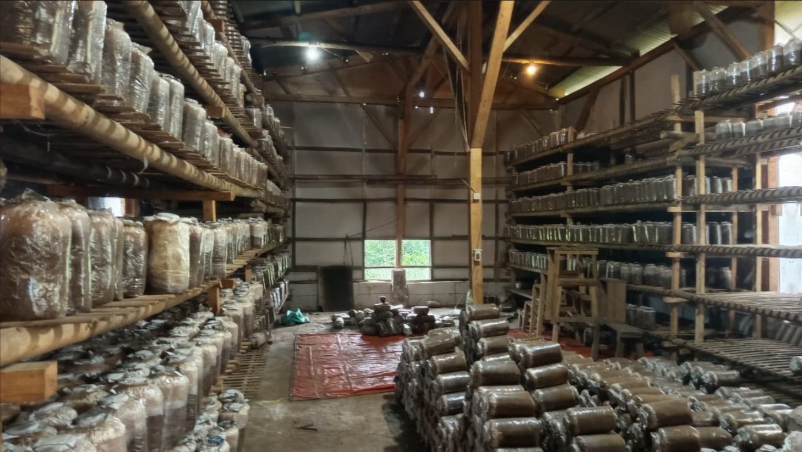
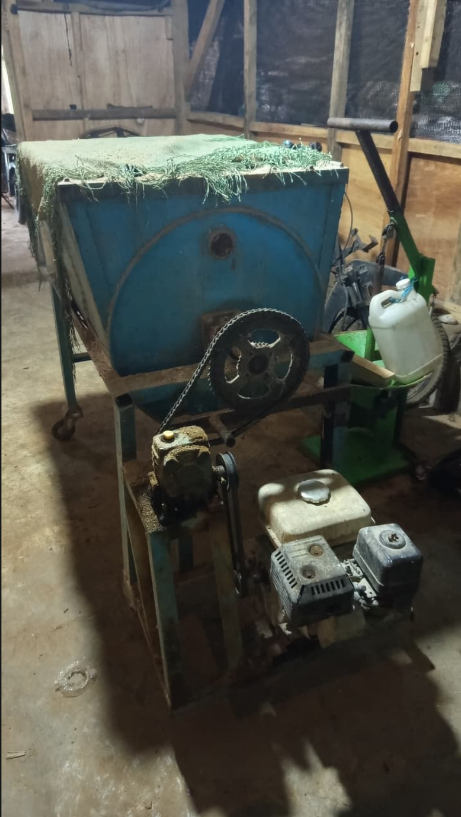
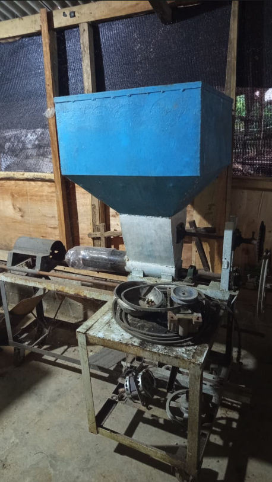
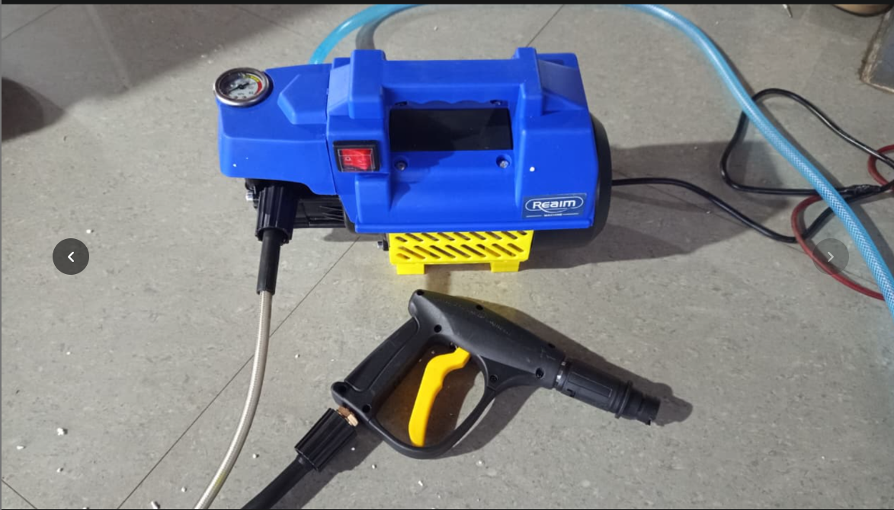
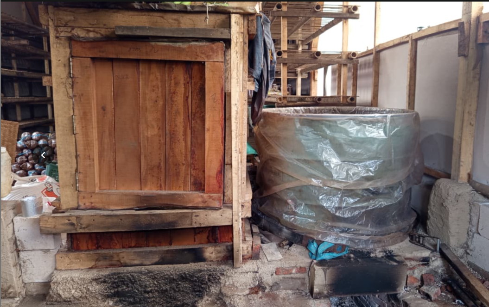
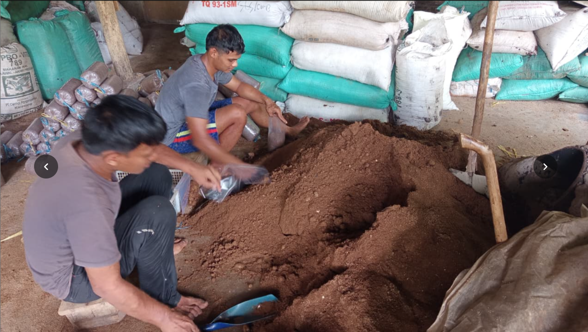
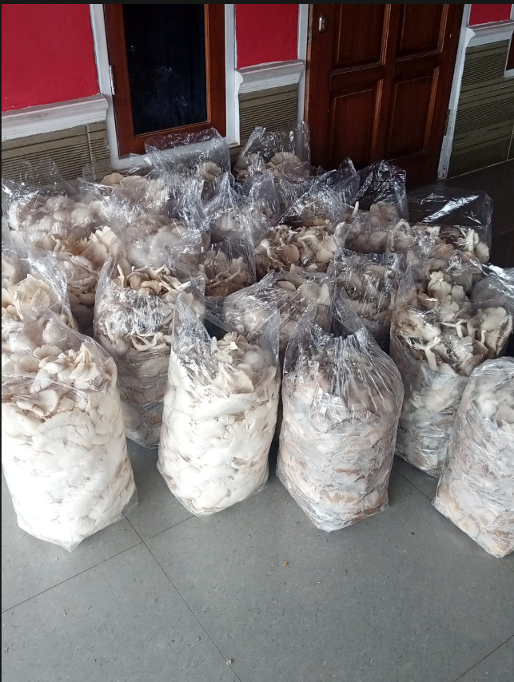